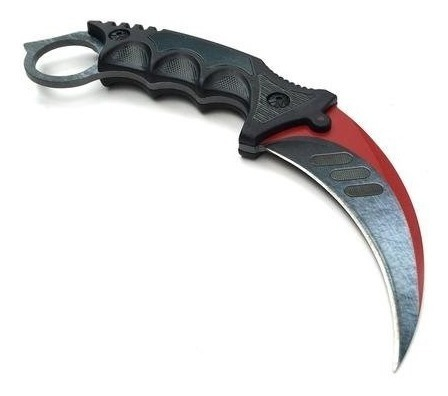
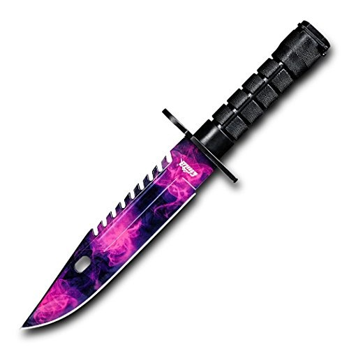
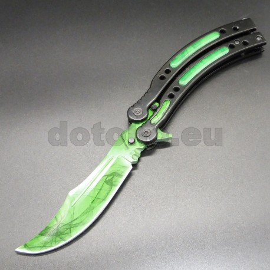
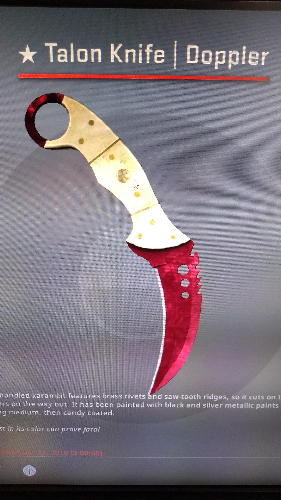

| Karambit |
| M9Bayoneta |
| Mariposa |
| Talón |
|  | Con su hoja curva que imita la garra de un tigre, el karambit se desarrolló como parte de la disciplina marcial del silat en el sudeste asiático. El cuchillo se usa típicamente con un agarre inverso, con el anillo en el dedo índice |
|  | Esta es la bayoneta M-9. Originalmente destinado a ser montado en un rifle, también es adecuado para el combate cuerpo a cuerpo. La bayoneta M9 es un cuchillo cosmético disponible para los jugadores en Counter-Strike: Global Offensive, y es un objeto extremadamente raro recibido al abrir ciertas cajas de armas. La bayoneta M9 es uno de los cinco cuchillos cosméticos originales presentados en la actualización de Arms Deal. |
|  | Este es un diseño personalizado, comúnmente conocido como un cuchillo de mariposa. La característica definitoria de esta arma es la apertura en forma de abanico de una cuchilla que gira libremente, lo que permite un rápido despliegue u ocultamiento. Como resultado, los cuchillos mariposa están prohibidos en muchos países. |
|  | Este Talón con mango de marfil presenta remaches de latón y crestas de dientes de sierra, por lo que se corta al entrar y se rasga al salir.Es muy parecido al Karambit, la diferencia que que en la parte de la sierra tiene unos agujeros delante y la propia sierra |